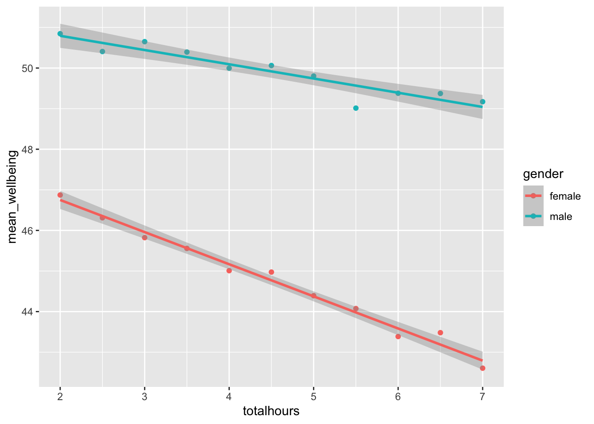

wemwbs <- wellbeing |> mutate(wellbeing = WBOptimf + WBUseful + WBRelax + WBIntp + WBEnergy + WBDealpr + WBThkclr + WBGoodme + WBClsep + WBConfid + WBMkmind + WBLoved + WBIntthg + WBCheer) |>
select(Serial, wellbeing)10. Multiple linear regression
Three important things to remember:
As you complete the handout, please don’t just read the commands, please type every single one of them. This is really important: Learning to program is like practicing a conversation in a new language. You will improve gradually, but only if you practice.
If you’re stuck with something, please write down your questions (to share later in class) and try to solve the problem. Please ask your group members for support and, conversely, if another student is stuck, please try to help them out, too. This way, we develop a supportive learning environment that benefits everybody. In addition, get used to the Help pages in RStudio and start finding solutions online (discussion forums, online textbooks, etc.). This is really important, too. You will only really know how to do quantitative research and statistical analyses when you are doing your own research and dealing with your own data. At that point, you need to be sufficiently autonomous to solve problems, otherwise you will end up making very slow progress in your PhD.
Finally, if you do not complete the handout in class, please complete the handout at home. This is important as we will assume that you know the material covered in this handout. And again, the more you practice the better, so completing these handouts at home is important.
References for this handout
Many of the examples and data files from our class come from these excellent textbooks:
- Andrews, M. (2021). Doing data science in R. Sage.
- Crawley, M. J. (2013). The R book. Wiley.
- Fogarty, B. J. (2019). Quantitative social science data with R. Sage.
- Winter, B. (2019). Statistics for linguists. An introduction using R. Routledge.
- The Glasgow PsyTeachR materials
Task 0: Setting up our environment
Create a new script and call it Week 10.
Load in the tidyverse and the performance library at the top of the script
The important information
This week we are going to explore data from Przybylski and Weinstein (2017)1. They used English adolescents to assess the effect of smartphones on young adult wellbeing.
The abstract from this paper is as follows
“Although the time adolescents spend with digital technologies has sparked widespread concerns that their use might be negatively associated with mental well-being, these potential deleterious influences have not been rigorously studied. Using a preregistered plan for analyzing data collected from a representative sample of English adolescents (n = 120,115), we obtained evidence that the links between digital-screen time and mental well-being are described by quadratic functions. Further, our results showed that these links vary as a function of when digital technologies are used (i.e., weekday vs. weekend), suggesting that a full understanding of the impact of these recreational activities will require examining their functionality among other daily pursuits. Overall, the evidence indicated that moderate use of digital technology is not intrinsically harmful and may be advantageous in a connected world. The findings inform recommendations for limiting adolescents’ technology use and provide a template for conducting rigorous investigations into the relations between digital technology and children’s and adolescents’ health.”
What is really impressive is the size of the sample used, as well as the fact that theymade their data openly available. This is great because we can have a look! In this exercise, we will look at whether the relationship between screen time and well-being is modulated by participants’ (self-reported) gender.
The dependent measure used in the study was the Warwick-Edinburgh Mental Well-Being Scale (WEMWBS). This is a 14-item scale with 5 response categories, summed together to form a single score ranging from 14-70 - So this is what we are interested in modelling. The reported wellbeing of the adolescents measured on this 14-item scale.
We will be usin preprocessed data for the ease of carrying out a multiple regression, but you can find the raw data in the reference above.
The study used multiple measures of screen time, but we will only be looking at smartphone use in these examples, feel free to continue your exploration with other measures too.
Przybylski and Weinstein looked at multiple measures of screen time, but we will be focusing on smartphone use. They found that decrements in well-being started to appear when respondents reported more than one hour of weekly smartphone use. Our question: Does the negative association between hours of use and well-being (beyond the one-hour point) differ for boys and girls?
So we want to explore how screen time and gender influences self-reported well-being. We have three variables:
- our DV: well-being which is a
- our first IV: screen time, which is a
- our second IV: gender, which is a
Based on our previous experiences, this question looks like it should be addressed with a simple regression (to model the effect of screen time on well-being) AND a t-test to compare wellbeing scores between the (boy and girl) gender groups. But wait, multiple regression allows us to do this in combination, offering us a stronger, more robust analysis.
Task 1: Reading in our data
Download the three files wk10_wellbeing.csv, wk10_participant_info.csv, and wk10_screen_time.csv and read these into your R environment. Call them wellbeing, pinfo, and screen respectively.
The wellbeing tibble has information from the WEMWBS questionnaire; screen has information about screen time use on weekends (variables ending with we) and weekdays (variables ending with wk) for four types of activities: using a computer (variables starting with Comph; Q10 on the survey), playing video games (variables starting with Comp; Q9 on the survey), using a smartphone (variables starting with Smart; Q11 on the survey) and watching TV (variables starting with Watch; Q8 on the survey).
Task 2: Data Wrangling
Before we can do any analysis, we need to tidy up the data. If we look at wellbeing then we can see that it has participant IDs in Serial and then each column is the response to each question on the WEMWBS scale. We want a single score which is the sum of all scores. This can be done in a number of ways, either using mutate() and select(), or with pivot_longer() and summarise()
Create a new object called wemwbs that has just two columns, serial and wellbeing (the sum score) using one of the above methods
method 1
method 2
wemwbs <- wellbeing |> pivot_longer(cols = c(WBOptimf:WBCheer)) |> #this : allows me to say "use all columns between and including these columns
group_by(Serial) |>
summarise(wellbeing = sum(value))Because these steps were taken by the original authors, we can check we got the right numbers by checking against the mean and SD reported originally, 47.52 (SD = 9.55), as well as thinking about the above “The dependent measure used in the study was the Warwick-Edinburgh Mental Well-Being Scale (WEMWBS). This is a 14-item scale with 5 response categories, summed together to form a single score ranging from 14-70” - what range should the data fall within? What if it is above or below this?
Combining dataframes
Next we need combine our wellbeing scores with the screen time data. If you look at the screen data, then you’ll see it has data for more than just smartphones, so we need to select the relevant columns before pivoting and joining the data with the wellbeing scores
data <- screen |>
select(Serial, starts_with("Smart")) |> #what do you think that this does? Use the help or Google to find out what starts_with does for us
pivot_longer(cols = Smart_we:Smart_wk, values_to = "hours", names_to = "day") |>
inner_join(wemwbs, by = join_by(Serial)) |>
mutate(day = recode(day,
"Smart_wk" = "Weekday",
"Smart_we" = "Weekend"))Now let’s visualise the effect of screen time on wellbeing. The graph makes it evident that smartphone use of more than 1 hour per day is associated with increasingly negative well-being.
data |>
group_by(day, hours) %>%
summarise(mean_wellbeing = mean(wellbeing)) |> # get a mean for day type and for hours spent
ggplot(aes(hours, mean_wellbeing, linetype = day)) +
geom_line() +
geom_point()`summarise()` has grouped output by 'day'. You can override using the `.groups`
argument.
We need to tidy up the data slightly further to only look at time spent over 1 hour, as well as get a mean score for each participant for their hourly usage over both weekdaya dn weekend.
To do this you will need to create a new object called totalhours which is created by having to first filter the data for hours over 1, and then group_by participant, before summarising to get a mean hourly average. You should aim to have the data look like the below (if you run head(totalhours))
# A tibble: 6 × 2
Serial totalhours
<dbl> <dbl>
1 1000003 2
2 1000004 2.5
3 1000005 3.5
4 1000006 2
5 1000008 2
6 1000009 2 Then we need to combine total_hours with the other two datasets using inner_join - we will need to do this twice because we can only combine with one dataframe at a time.
solution
data <- total_hours |>
inner_join(wemwbs, by = join_by(Serial)) |>
inner_join(pinfo, by = join_by(Serial))Task 3: mean centring variables
When you have continuous variables in a regression, it is often sensible to transform them by mean centering. You mean center a predictor X simply by subtracting the mean (X_centered = X - mean(X)). This has two useful consequences:
the model intercept reflects the prediction for Y at the mean value of the predictor variable, rather than at the zero value of the unscaled variable;
if there are interactions in the model, any lower-order effects can be given the same interpretation as they receive in ANOVA (main effects, rather than simple effects).
For categorical predictors with two levels, these become coded as -.5 and .5 (because the mean of these two values is 0).
- Use mutate to add a new variable to data: totalhours_c, calculated as a mean-centered version of the tothours predictor
- Use mutate to change gender so that it reads “male” and “female” instead of numbers
- Finally, recode the gender variable as a factor, so that R knows not to treat them as a real numbers. (we can use the code skeleton
mutate(x = as.factor(x))to force a continuous variable into a factor)
solution
data <- data |>
mutate(totalhours_c = totalhours - mean(totalhours),
gender = if_else(gender == 1, "male", "female")) |>
mutate(gender = as.factor(gender))Task 4: Visualising the relationship
Now we have the data in the format that we want, let’s visualise it
data |>
group_by(totalhours, gender) |>
summarise(mean_wellbeing = mean(wellbeing)) |>
ggplot(aes(totalhours, mean_wellbeing, colour = gender)) +
geom_point() +
geom_smooth(method = "lm")`summarise()` has grouped output by 'totalhours'. You can override using the
`.groups` argument.
`geom_smooth()` using formula = 'y ~ x'
How can we interpret the above plot? How does it translate to the real world?
my interpretation
For smartphone use over one hour per day, girls show an overall lower well-being score compared to boys. The effect of usage is more pronounced for girls, as shown by the more negative relationship in the slope. The boys’ slope is flatter, suggesting that wellbeing is negatively impacted more in girls as hourly use increases.
Task 5: Running a multiple regression
Finally, let’s run the model and see whether we find anything significant. Using the data object, create a model to predict wellbeing with two predictors, the centred totalhours and gender.
lm(wellbeing ~ totalhours_c * gender, data) |>
summary()
Call:
lm(formula = wellbeing ~ totalhours_c * gender, data = data)
Residuals:
Min 1Q Median 3Q Max
-36.815 -5.695 0.392 6.213 27.305
Coefficients:
Estimate Std. Error t value Pr(>|t|)
(Intercept) 44.86660 0.04474 1002.82 <2e-16 ***
totalhours_c -0.81836 0.02473 -33.09 <2e-16 ***
gendermale 5.13915 0.07104 72.34 <2e-16 ***
totalhours_c:gendermale 0.47327 0.03926 12.05 <2e-16 ***
---
Signif. codes: 0 '***' 0.001 '**' 0.01 '*' 0.05 '.' 0.1 ' ' 1
Residual standard error: 9.136 on 71145 degrees of freedom
Multiple R-squared: 0.0938, Adjusted R-squared: 0.09376
F-statistic: 2455 on 3 and 71145 DF, p-value: < 2.2e-16Great. Let’s extract the meaningful information from the output we have here, as well as understnad what it all means
Is the overall model significant?
To 2dp, what is the \(R^2\) value?
For a unit increase in totalhours_c, how much does wellbeing change (to 2dp)? Wellbeing by .
Before the next question, we need to know how to interpret categorical variables. Gender is a categorical variable which means that a “unit increase” is not continuous and instead means the difference between one category and the next. When we run as.factor() above, it automatically chooses a reference level (the first level) because if we look in the model output it shows us “gendermale” which is confusing because what does this mean? gender is the variable name (obviously) and the reference level is whatever is first alphabetically (female is before male, so female is our reference), the output shows us the number between the reference and the other factor level (which is male) - if we revisit the plot with these numbers in mind, we should expect to see that the difference between the two lines is roughly this value. So,
- What is the difference seen in wellbeing scores for boys compared to girls (to 2dp)?
Task 6: Comparing Models
Simply put, we can check whether the model with an interaction performs better (explains more) with the interaction by using AIC() for comaprisons, as well as using anova(model1, model2) to see whether they are significantly different in their composition.
Remember from the lectures that the lower AIC value is usually the better model, and for the anova test, we want to see whether the more complex model is significantly different to the less complex. If it is not significantly different (p > .05) then we might choose the simpler model, but if it is significantly different, then we can keep the more complex model.
lm(wellbeing ~ totalhours_c + gender, data = data) |> AIC()[1] 516861.7lm(wellbeing ~ totalhours_c * gender, data = data) |> AIC()[1] 516718.6anova(lm(wellbeing ~ totalhours_c + gender, data = data),
lm(wellbeing ~ totalhours_c * gender, data = data), test = "Chisq")Analysis of Variance Table
Model 1: wellbeing ~ totalhours_c + gender
Model 2: wellbeing ~ totalhours_c * gender
Res.Df RSS Df Sum of Sq Pr(>Chi)
1 71146 5950819
2 71145 5938690 1 12129 < 2.2e-16 ***
---
Signif. codes: 0 '***' 0.001 '**' 0.01 '*' 0.05 '.' 0.1 ' ' 1Both tests point towards keeping the interaction. It is worth noting that the tests above are not the only possible ways of checking model suitability, there are other criterion methods, and the best thing to do is to use a well-validated and trusted method for validating models. Provided you can cite and justify your decisions, you shouldn’t face any major issues.
For now, we can be satisfied that the model with the interaction is good - and we can continue.
Task 7: Assumptions Checking
The assumptions for multiple regression are the same as simple regression but there is one additional assumption, that of multicollinearity, the idea that predictor variables should not be too highly correlated.
- The outcome/DV is a interval/ratio level data
- The predictor variable is interval/ratio or categorical (with two levels)
- All values of the outcome variable are independent (i.e., each score should come from a different participant)
- The predictors have non-zero variance
- The relationship between outcome and predictor is linear
- The residuals should be normally distributed
- There should be homoscedasticity (homogeneity of variance, but for the residuals)
- Multicollinearity: predictor variables should not be too highly correlated
From the work we’ve done so far we know that assumptions 1 - 4 are met and we can use the functions from the performance package again to check the rest, like we did with the simple linear regression chapter.
One difference from when we used check_model() previously is that rather than just letting it run all the tests it wants, we’re going to specify which tests, to stop it throwing an error. A word of warning - these assumptions tests will take longer than usual to run, because it’s such a big dataset. The first line of code will run the assumption tests and save it to an object, calling the object name will then display the plots.
assumptions <- check_model(lm(wellbeing ~ totalhours_c * gender, data),
check = c("vif", "qq", "normality", "linearity", "homogeneity"))Variable `Component` is not in your data frame :/assumptionsFor assumption 5, linearity, we already know from looking at the scatterplot that the relationship is linear, but the residual plot also confirms this.
For assumption 6, normality of residuals, again the residuals look good in both plots and this provides an excellent example of why it’s often better to visualise than rely on statistics because if we use check_normality() which calls the Shapiro-Wilk test, it tells us that the residuals are not normal, despite the fact that the plots look almost perfect. And that’s because with large sample sizes, any deviation from perfect normality can be flagged as non-normal.
For assumption 7, we can plot the assumption using the below:
ggplot(assumptions$HOMOGENEITY, aes(x, y)) +
geom_point() +
stat_smooth(
method = "loess",
se = FALSE,
formula = y ~ x,
) +
labs(
title = "Homogeneity of Variance",
subtitle = "Reference line should be flat and horizontal",
y = expression(sqrt("|Std. residuals|")),
x = "Fitted values"
) Again like normality, the plot isn’t perfect but it is pretty good and another example of why visualisation is better than running statistical tests as we see the same significant result if we run:
check_homogeneity(lm(wellbeing ~ totalhours_c * gender, data))Warning: Variances differ between groups (Bartlett Test, p = 0.000).For assumption 8, linearity, again the plot looks fine, and we could also have used the grouped scatterplots above to look at this.
Finally, for assumption 9, multicollinearity, the plot also indicates no issues but we can also test this statistically using check_collinearity().
Essentially, this function estimates how much the variance of a coefficient is “inflated” because of linear dependence with other predictors, i.e., that a predictor isn’t actually adding any unique variance to the model, it’s just really strongly related to other predictors. You can read more about this here. Thankfully, VIF is not affected by large samples like the other tests.
There are various rules of thumb, but most converge on a VIF of above 2 - 2.5 for any one predictor being problematic.
Task 8: Effect size.
We report effect sizes the same way that we would for a simple linear regression: \(R^2/(1-R^2)\)), which we have to do by hand.
solution
0.09377 / (1-0.09377)[1] 0.1034726Task 9: The interpretation and writeup
Finally, we need to take all our tests and produce a writeup of our findings. The format is similar to last week’s, so look back for help:
To test whether wellbeing was affected by smartphone use and , a multiple linear regression was used with an interaction between smartphone use and gender. The results of the regression indicated that the model significantly predicted wellbeing scores, F(, ) = , p , \(R_{adjusted}^2\) = , \(f^2\) = . Total screen time was a significant negative predictor of well-being scores (\(\beta\) = , p < .001, as was gender (\(\beta\) = , p < .001, with girls having lower well-being scores than boys. Importantly, there was a significant interaction between screen time and gender (\(\beta\) = , p < .001), smartphone use was more negatively associated with well-being for girls than for boys.
Footnotes
Przybylski, A. & Weinstein, N. (2017). A Large-Scale Test of the Goldilocks Hypothesis. Psychological Science, 28, 204–215.↩︎